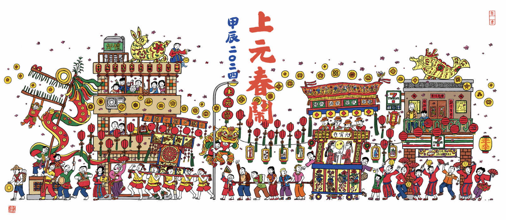
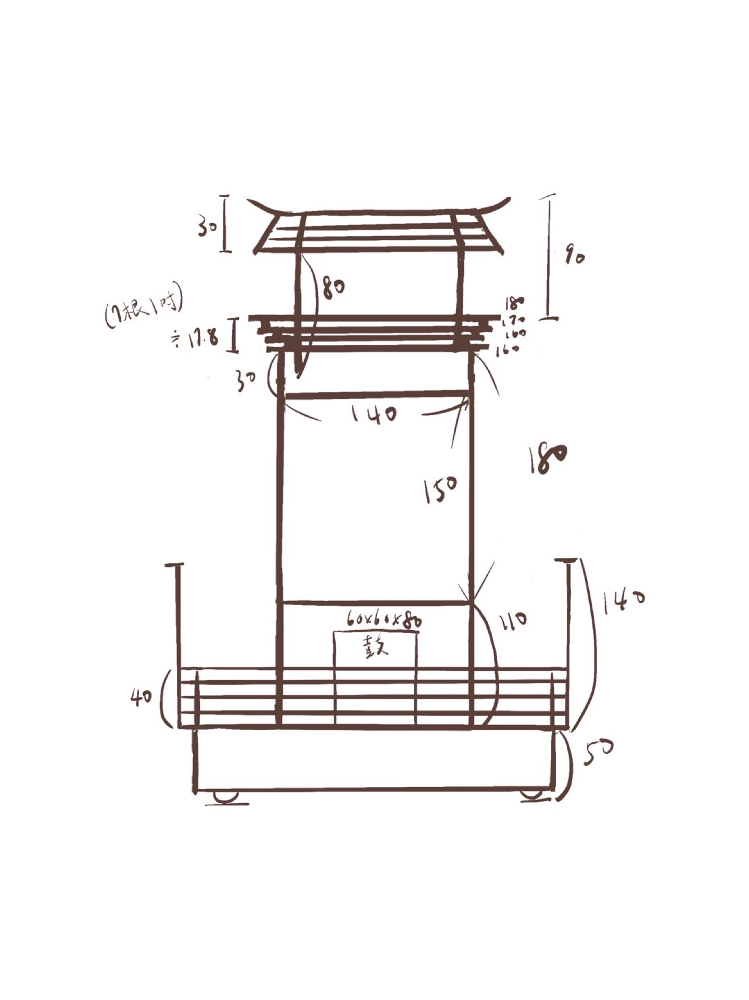
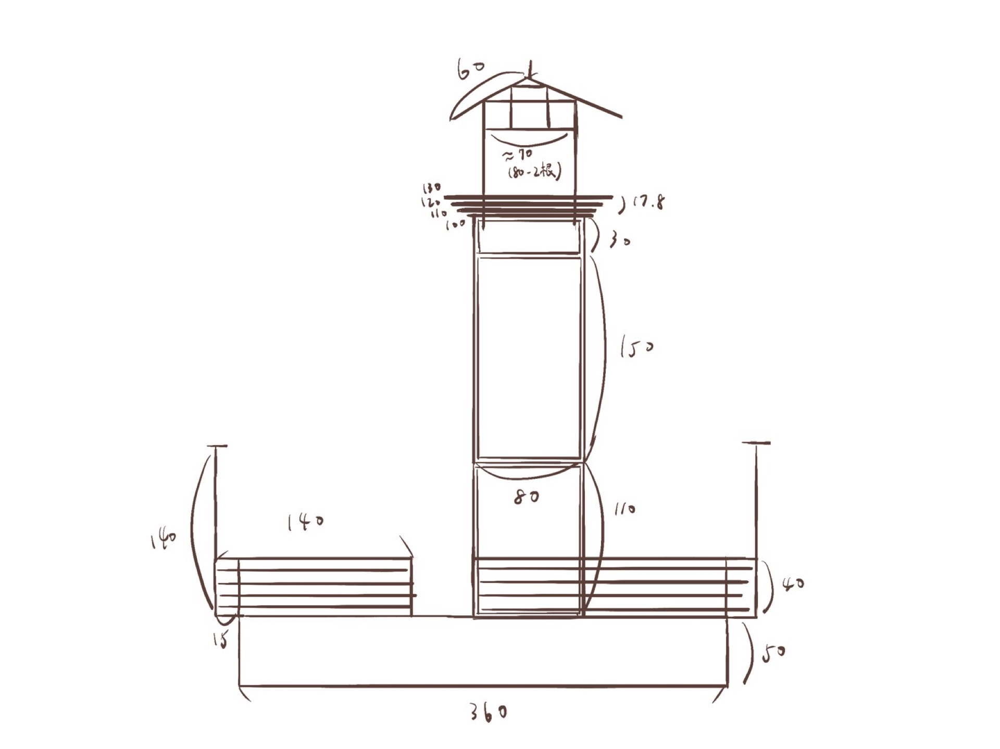
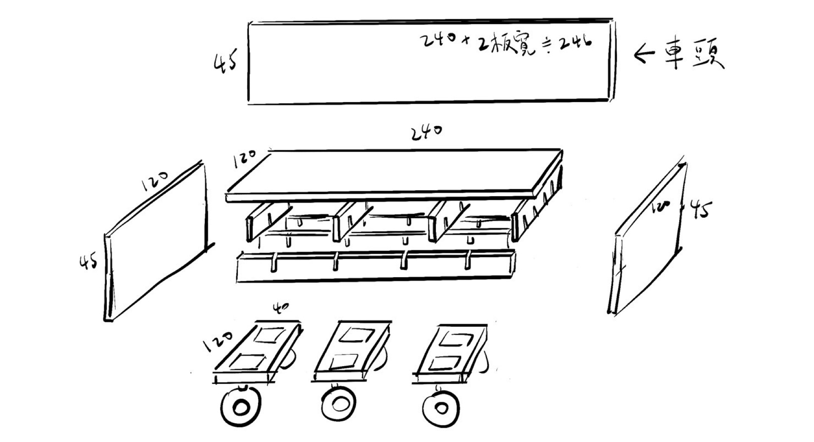
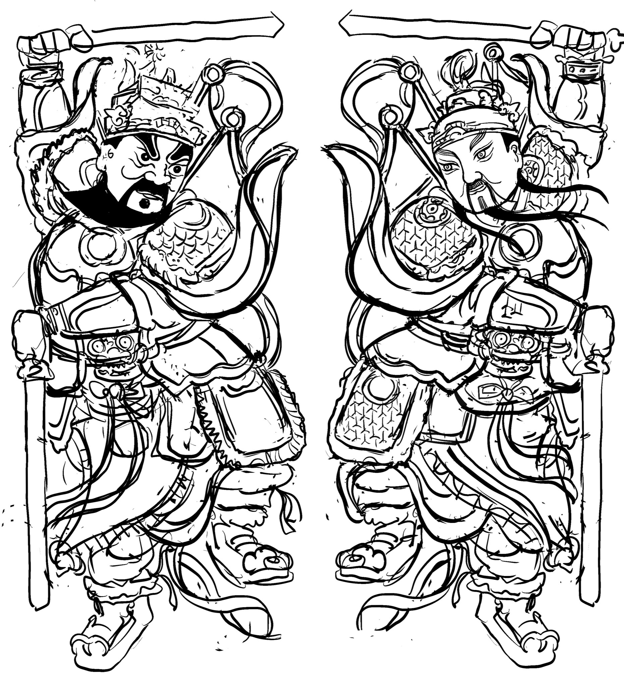

OVERVIEW
活動概覽

2024甲辰上元，由莊逸軒發起，原定由志工團隊組成的「年秊節祭」主辦，後因經費考量，回歸由高雄「蟬雨越讀」獨立書店店長楊詠擔任總召集人，號召書店客人及學生加入，年秊則改為協辦。
主辦
總召楊詠（蟬雨越讀書店）・藝術統籌莊逸軒（年秊協辦）
籌備期
2023年09月 ─ 2024年2月24日
活動時間
2024年2月24日至25日
活動路線
首日：文化中心圓形廣場 → 五福路 → 鹽埕新豐里
次日：鹽埕新豐里 → 五福路 → 文化中心圓形廣場
成果
兩日活動踩街約200人參與，次日因為碰上「黃色小鴨」活動最後一天，在市府要求下，中途路線改道，從中正路橋離開鹽埕。是第一次嘗試與社區民眾共創「里燈」、竿燈，並使用竹篾手編燈籠，也是第一次進入文化中心演出。
現場紀錄
THEME
年度主題
卯兔躍、辰龍騰。在上元這一夜，在五福這條路，孩子跳著舞、老者唱著歌、親友扛著轎、家戶提著燈，人們在此，相聚、牽手、擁抱，只為慶祝一場團圓的祝福。
因為要在這平凡日常裡，過起不平凡的節，我們連日練習，在紅紙剪出花、在白紙點上蠟，直到馬路車水，聽到隊伍吆喝而凝滯；直到城市夜色，見到手編燈籠而明亮。
獻上所有，在新春的第一個月圓。
PROGRAM
活動流程
時間僅作參考，上路後，一切莫料，順流而行。
二月廿四日・首日
16:30 - 17:00
整備
文化中心
場控窩機測試、音響校準、所有裝置與道具定位。
17:00 - 17:05
祭拜天地
文化中心牌樓前
眾人上香敬拜天地，開啟節祭儀式。
17:05 - 17:10
太平歌
文化中心
全員合唱〈太平歌〉，感受此刻共在，讓太平氛圍在眾人之間流動。
17:10 - 17:30
締紅
文化中心・花轎旁
每人取一紅布條，書寫對緣分與圓滿的祝福，邀親友一同到花轎上締上繩結。
17:30 - 17:45
小歲轉
文化中心
竿燈隊帶頭跳四方步，廣邀周邊民眾加入第三圈共舞，讓舞步從內部開始向外捲入群眾。
17:45 - 17:48
點燈
文化中心
日落時分，眾人齊喊「點燈」，燈車、花轎、竿燈、里燈同時燃亮，全場點亮。
17:48 - 17:55
大歲轉
文化中心
花轎起轎，燈車同步轉動，喊「送癸卯、迎甲辰」，隊伍在圓轉中聚氣備發。
18:00 - 19:00
報春・五福一路
五福一路 → 二路
報馬仔先行宣告隊伍來臨，麒麟、花轎、竿燈沿街，與店家居民互道新年快樂。
19:00 - 19:45
大休息
中央公園
隊伍停中央公園休息約15-30分鐘，可跨隊互動；燈車停路肩換電池。
19:45 - 20:30
報春・五福三路
五福三路
繼續沿街小拜年，舞獅紅綠燈時對隊伍內外彈性發動遊戲，搭肩接龍、搶奪互動。
20:30 - 21:00
進夜市
五福四路 → 紅橋夜市
隊伍在七賢公園路口分兩組，分從夜市左右兩側進入，在必信街口整隊集合。
21:00 - 21:30
合巹・三進三出
鹽埕新豐里・代天府前
燈車定位代天府兩側，花轎交禮里長與廟公，里燈越轎交禮，花轎三進三出；第三次進廟前歡呼，第三次退靜默。
21:30 - 22:00
鬧春・終場
新豐里
全體禮敬天地人，眾人扛起花轎鑽轎鬧春，里燈繞圈，歡呼之後共享湯圓，收場。
二月廿五日・次日
17:00 - 17:10
定場
鹽埕新豐里
設置拔緪繩，燈車就位，隊伍分新豐、安祥兩隊，以里燈為首各自整列。
17:10 - 17:25
打對台
鹽埕新豐里
兩隊亮相、打鼓對陣、表演對陣、舞蹈對陣，吆喝居民出來助陣加入。
17:25 - 18:00
拔緪・占新年
鹽埕新豐里
五戰三勝制拔河，占卜新年運勢；賽畢，繩子扛肩繞至燈綵車，呈Ｖ字固定，隨隊出發。
18:00 - 19:00
遊春・連繩
五福四路 → 三路
眾人連著拔緪繩沿五福路逆行，將外聚內，象徵把各方祝福帶回，路線如遇黃色小鴨改道則走建國路。
19:00 - 19:45
大休息
新堀江商圈
隊伍於新堀江休息約15-30分鐘；燈車停路邊換電池。
19:45 - 21:00
歸返
五福二路 → 一路
持續連繩前行，燈車場控協助燈車上坡進入文化中心。
21:00 - 21:30
豐樂・逆歲轉
文化中心
進大門後回中心整隊，花轎落凳，以逆反大歲轉圓轉一圈半，啟二十四節氣，象徵歲終歸圓。
21:30 - 22:00
宣疏・送燈
文化中心
全場熄燈靜默，宣疏者念辭，燈再亮，全體合唱太平歌謝天，花轎上肩即興鬧春，歡騰送走甲辰。
TEAM
策劃團隊
主辦
楊詠
總召集人
蟬雨越讀書店主理人，凝聚人與資源，讓不同能量在節祭中集結。
主辦
莊逸軒
藝術統籌
建立上元的理念與想像，找到文化的切入點，統整美學調性。
執行製作
執行統籌
場控
後勤
文婷
現場
場控
後勤
文婷
愷徽
文書
文書記錄
資訊整合
便當
支援
行政支援
發霉兔
贊助
贊助聯繫
資源對接
楊詠
財務
財務統籌
報帳
容禎
宣傳
線上社群
文婷
攝影
活動攝影
紀錄片
言叡
章甫
藝術核心
美學調性
創作論述
各組整合
逸軒
家茗
裝置
燈車
里燈
花轎
裝飾
家茗
黎
廷威
宛禎
逸軒
皓允
木工
育誼
小8
小鍾
電工
翊辰
政諺
子群
家燈
竿燈
容禎
社群
里燈
社區參與
鴻鈞
音樂
上街音樂
文化融合
蔡秉
表演
肢體表達
現場引力
Ben
舞蹈
肢體律動
民眾參與
丹丹
章甫
雷恩
轎班
花轎抬轎
行進儀式
政諺
子玄
育誼
翊辰
廷威
主辦
部門主管
各組
滑鼠移至名字標籤可見成員簡介
ARTWORK
創作內容




DISCOURSE
創作論述
← 點選左側文章標題
TIMELINE
工作期程
COLLABORATORS
共同創作者視角
2024 甲辰年《上元春鬧》紀錄片｜Jiachen Year《Shang Yuan Celebration》
← 點選左側創作者姓名